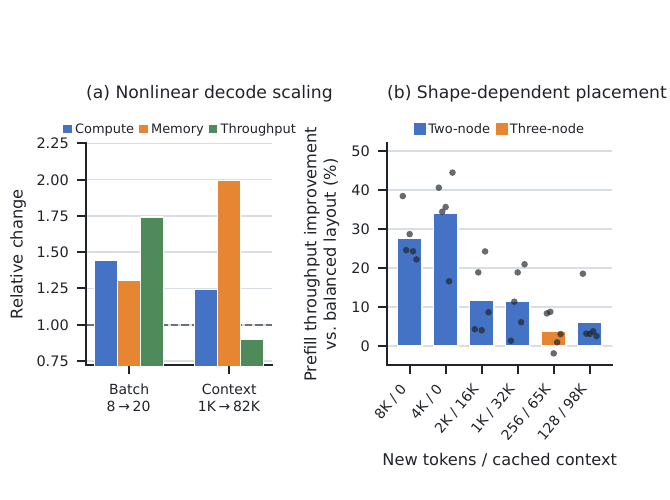
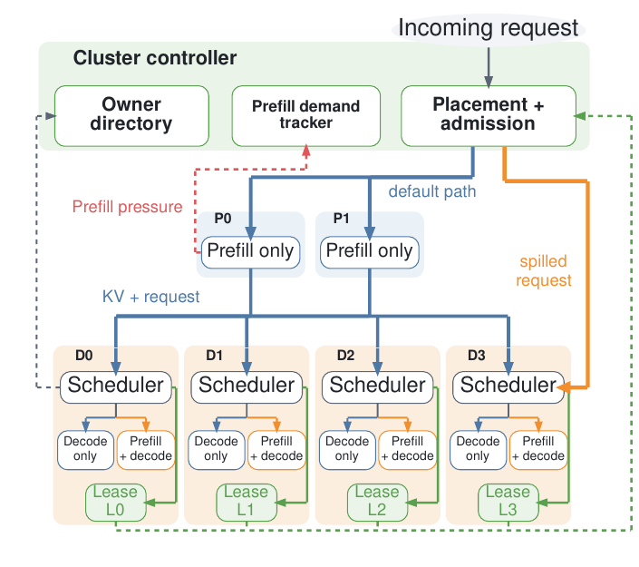
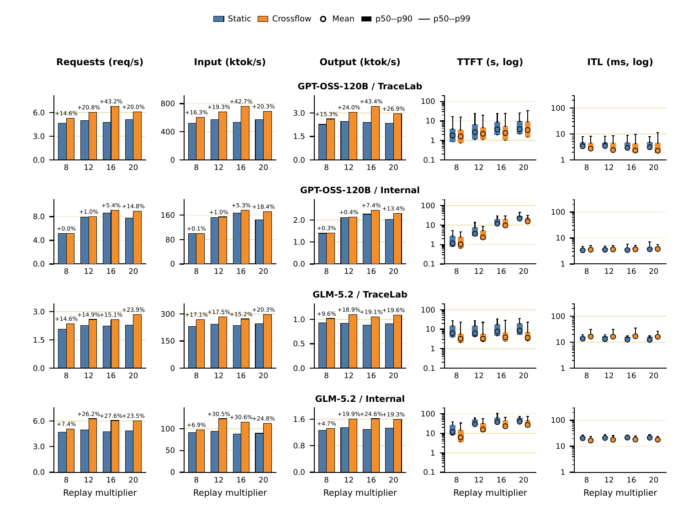
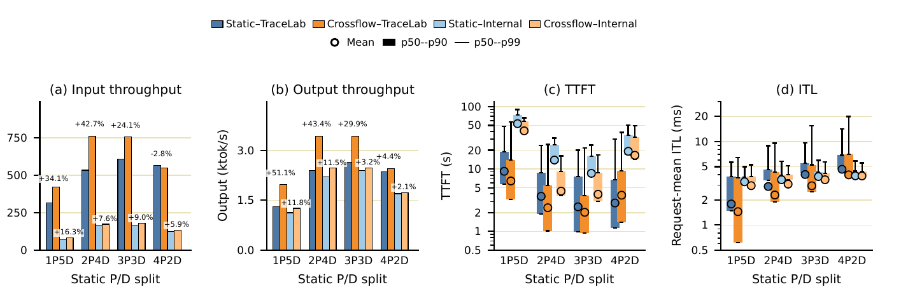
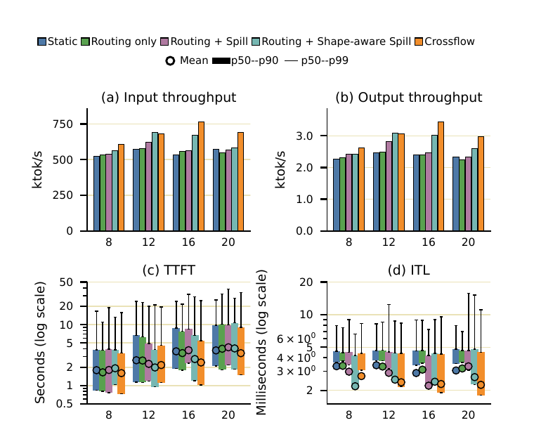
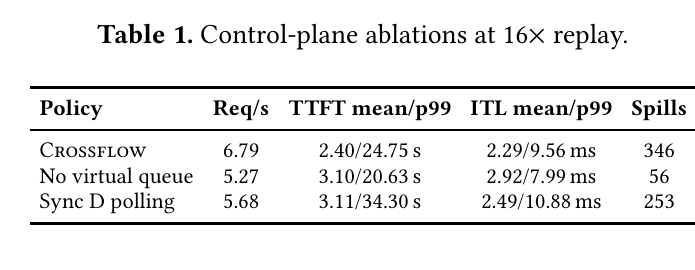

Crossflow: Prefill-Decode Elasticity for Agentic LLM Serving
Prefill–decode（P/D）disaggregation 用固定角色換得 phase specialization 與 decode isolation，卻也把瞬時容量鎖死。Crossflow 不搬動 replica，而讓 decode node 發布短期、可撤銷的多資源租約，cluster controller 只在 prefill 壅塞、spill 路徑更快且 decode SLO 仍安全時，將選定的 prefill 放到其既有 decode home 執行。
在兩個模型與兩條 timestamp-preserving trace 的 16 個 matched load points，input/output token throughput 的幾何平均提升為 17.4%/16.2%；但 GLM-5.2 配 TraceLab 的 mean ITL 反而增加 20.9–34.3%，所以結論是「可控地回收 transient slack」，不是免費吞吐。 §6.2 · PDF pp.7–8 · Fig. 5
文章目錄
先把 P/D、TTFT、ITL 與 KV 歸屬放在同一張地圖
理解障礙不在「prefill 與 decode 不同」這句話，而在於四個狀態同時互相牽制：計算、延遲、KV cache 與 session 歸屬。先把它們對齊，後面才看得出 Crossflow 為何需要 cluster 與 node 兩層控制。
一個請求其實有兩種不同工作型態
Prefill 一次處理輸入 prompt，建立各層 key–value cache；大矩陣運算較容易吃到 compute throughput。Decode 每輪替每條 active sequence 產生一個 token，反覆讀 model weights 與持續成長的 KV cache，常受 memory bandwidth、batch composition 與 cache capacity 限制。P/D disaggregation 把兩者放到不同 pool，讓 parallelism、batching 與容量各自調整，同時避免長 prefill kernel 擾動 decode iteration。 §2.1–§2.2 · PDF p.2
| 概念 | 系統意義 | Crossflow 為何在意 |
|---|---|---|
| TTFT | Time to First Token；含 admission、prefill queue/execution 與 P→D KV transfer。 | spill 的首要收益是縮短 prefill 排隊與首 token 等待。 |
| ITL | Inter-Token Latency；連續 generated tokens 之間的延遲。 | 把 prefill 借到 decode node 可能干擾 foreground generation。 |
| KV affinity | 後續 turn 若回到已有 prefix state 的節點，可少做 recompute/transfer。 | conversation 維持固定 decode home，spill 不隨意搬家。 |
| uncached input | 真正需要新 prefill 計算的 prompt suffix，而非應用看到的完整 prompt。 | virtual queue 與 path comparison 必須按新工作量計費。 |
分析Crossflow 的目標不是重新發明 colocated serving，而是在保留 P/D 專門化的前提下，短暫借用 decode slack。這也預告了它的雙重成功條件：prefill 必須真的更快，decode 的 ITL 也必須仍在可接受 envelope 內。
既然兩個 pool 各有用途，真正的問題是：固定邊界到底浪費了多少，又為何不能直接看 GPU utilization 來借？
靜態 P/D 邊界為何追不上 agentic 流量？
本章要排除的直覺誤區是「選好一個平均 P/D ratio 就夠了」。agentic turn 會被 tool completion 成批釋放，prefix reuse 改變實際 prefill 工作，output length 又改變 decode occupancy；需求比例的變化速度遠快於整個 replica 的重配置。
需求在分鐘內移動，replica 卻要十幾分鐘才能搬完
論文以未命中 prefix 的輸入 token 與輸出 token 比值 \(R(t)=\mathrm{Tok}_{in,uncached}(t)/\mathrm{Tok}_{out}(t)\) 表示兩 phase 的相對需求。內部 chat use case 在數十秒取樣下出現最高 4.7× peak-to-mean；134 個完整日的 TraceLab agentic trace，單日 hourly max/min 的中位數達 24.5×，而典型一天會有某一小時偏離當日平均 3.9×。 §1 · PDF p.1 · Fig. 1；§3.1 · PDF p.3 · Fig. 2
相對地，測試 harness 將 GPT-OSS-120B 的完整 2P4D pool 啟動到 ready 需 8:35、cluster 可服務需 11:02；GLM-5.2 分別為 14:59 與 17:31。作者明確說這不是最佳化下限，但它足以說明：以 whole-replica repartition 追逐 minute-scale demand，控制週期本身就錯位。 §3.1 · PDF pp.3–4
保守 provisioning 會把兩邊的 headroom 同時鎖死
若 \(\rho\) 表示硬體 decode-to-prefill median throughput ratio，則 prefill 應占的 capacity share 為：
\(\rho\) 把 token-demand ratio 轉成 resource-demand ratio；因此 \(R(t)=1\) 並不代表兩邊需要相同資源。若兩池各按自己的 p95 配置，在固定總需求、只改變 mix 的推導中，stranded share 正好是 \(f_{95}-f_5\)。
實驗事實四個 use cases 的 p95/p95 sizing 會閒置 10.8–17.5% balanced capacity；最不穩定的案例若按 peak 配置可達 40%。若改成 prefill 近 median、decode 在 p95 以上，並允許 decode slack 借給 prefill，估算的 stranded capacity 可降至 6.0–7.4%。 §3.1 · PDF pp.3–4
但「GPU 還沒滿」不是安全容量
相同 decode aggregate load，不同 request shape 與 placement 會給出不同的 SLO-safe prefill 容量。batch 8→20 時，compute activity、memory traffic、decode throughput 分別變成 1.44×、1.30×、1.74×；batch 8 下 context 1K→82K 時，memory traffic 幾乎 2×，compute 只有 1.24×，throughput 還下降約 10%。 §3.2 · PDF p.4 · Fig. 3a


只改四個 nodes 上的 decode 分布，四種較短 context 的 SLO-safe prefill throughput 就可相差 11.3–34.0%；65K context 偏好 three-node layout，98K 則偏好集中到 two-node。這把需求具體化成兩層責任：cluster controller 以 request shape 選擇誰與去哪裡，decode node 以即時狀態決定現在到底能借多少。 §3.2 · PDF p.4 · Fig. 3b
因此，Crossflow 需要的不是永久改分工，而是一張會到期、能撤回、同時約束多種資源的「借用許可」。
不要搬動節點，而是出租可撤銷的 decode 餘裕
理解 Crossflow 的最小模型，是把 2P4D cluster 想成兩個專門 prefill 櫃檯與四個 decode 櫃檯。當 prefill 突然排隊，D2 不改職稱、不接管整批服務，只發出一張幾個 scheduling intervals 後到期的許可，允許某個與其 resident batch 相容的 prompt suffix 在本地分段執行。
具體走一次：一個 multi-turn request 已被指定 D2 為 decode home，且 D2 可能保有部分 prefix。此時 P0/P1 的預測等待上升，D2 的 lease 則顯示尚有 compute chunk、KV、projected output、transfer 與 spill-slot credits。controller 先比較 default P→D 路徑與 D2-local spill 的完成時間；只有 spill 較快且每項 credit 都放得下，才原子保留資源。真正執行前，D2 仍會重新檢查現況；foreground decode 變重時，未發出的 prefill unit 可以暫停，下一版 lease 也可直接歸零。


這個機制更像「可撤銷的多維時段」，而不是把 GPU 切出固定百分比。比喻的邊界是：真實資源不是一個時間軸；compute、KV、future decode、transfer 與 coexecution interference 必須一起約束，而且同一個 prompt 放到不同 resident batch 旁邊會有不同成本。
這也解釋論文為何同時保留兩個 fallback：沒有 prefill pressure、spill 不比 default 快、telemetry 遺失、任何 hard limit 耗盡，或 local SLO 轉壞時，都回到靜態 disaggregated path。Crossflow 的核心不是讓更多請求走 spill，而是讓每一次 spill 都能被拒絕、暫停與過期。 §4 · PDF pp.4–7
直覺成立後，下一步是逐步檢查 controller 如何把「可借」轉成一致、不可超賣的 admission decision。
一個請求如何取得 lease、跨過 admission，再被本地 revalidate？
本章解決的障礙是控制邏輯分散在 queue、placement、cache 與 worker state 裡，不容易重建 end-to-end flow。可以把一次 admission 拆成六個連續 gate；任一 gate 不成立，就走原本 P/D 路徑。
Gate 1：virtual queue 讓 burst 在下一次 poll 前就可見
cluster scheduler 以 outstanding uncached prompt work \(W_P(t)\) 與近期處理率 \(\widehat{\mu}_P(t)\) 估計等待：
arrival 一進來就按 uncached suffix 增加 \(W_P\)，reservation 成功就釋放；worker 的直接 queue observation 用來校正 drift。高、低兩個 threshold 加上 bounded updates 形成 hysteresis，避免壓力訊號來回震盪。
若 prefill worker 無法回報有效狀態，系統停止新的 lending，而不是把 missing telemetry 當成空閒。 §4.1 · PDF p.5
Gate 2：decode node 只發布短命的 multi-resource lease
每個 node 從 running decode batch、remaining output、physical KV headroom、pending transfers、active/reserved spills、health 與 execution layout 算出 \(L_d(t)\)。lease 是帶 version 與 expiry 的 resource vector；新版本取代舊版本，未使用 credit 不累積。online feedback 只有在 decode latency 接近 baseline 且 spill completion 跟得上時才逐步放寬；hard SLO violation 會讓下一張 lease 歸零。 §4.2 · PDF p.5
Gate 3：home assignment 先守 load balance，再用 shape 破平手
prefill home 依 projected prompt work 平衡，decode home 則用 projected output 與 turn count；只有候選 nodes 的 load 在設定 margin 內，shape affinity 才把長 context 與相近 context 放在一起。conversation 之後固定回同一 decode home。owner directory 記錄「成功完成過的最長 prefix coverage」，但 coverage 不保證 KV pages 仍 resident，所以 admission 仍要預留可能的 recomputation。 §4.3 · PDF p.6
Gate 4：比較兩條路，不因「有 lease」就硬塞
\(T_D\) 是 request \(r\) 在 decode home \(d\) 的預測等待加 lease 條件下的 local service；\(T_P\) 是 default prefill queue、prefill service 與 KV transfer。只有 \(T_D<T_P\) 才值得 spill。
Gate 5：shape-aware ranking 之後仍要通過 hard constraints
候選分數為：
\(B_P\) 估計移走此 request 對原 prefill batch 的好處；\(I_D\) 估計 suffix、context/output 差異、active peers 與 idle headroom 所形成的 decode interference。分數只決定順序，不能越過 pressure、home、path benefit、shape bounds 或任何 lease credit。
node-local spill slots \(K_d(t)\) 與 cluster-wide concurrency \(G(\widehat{Q}_P(t))\) 同時限制借用；controller 在看下一個候選前先原子扣除 credits，避免 concurrent admissions 重複花同一份容量。 §4.3 · PDF p.6
Gate 6：reservation 是許可，不是強迫執行
decode executor 在每個 bounded prefill unit 前 revalidate；條件轉壞時只暫停未發出的工作。first token 前失敗會釋放 reservation 並回 prefill tier 重試；first token 後則留在原 decode home，避免 duplicate output 與 cache ownership ambiguity。實作以 6.7K-line Python shim 包住 router，worker side 在 15 個 SGLang files 新增 2,807 行、刪除 36 行，不需新 model kernel；Section 6 結果使用 native chunked mixed-batch backend。 §4.4–§5 · PDF pp.6–7
控制迴路完整之後，評估的問題不只是「throughput 有沒有升」，還要看它是否把代價藏進 TTFT、ITL、額外硬體或特定 split。
吞吐真的變高了嗎，代價落在哪一側？
本章把每個結論和它的 test condition 綁在一起。核心 setup 是六台 NVIDIA GB300 servers、每台四張 288-GB GPUs 與一個 TP4 worker，預設 2P4D；模型是 GPT-OSS-120B 與 GLM-5.2，workload 是一小時 TraceLab coding-agent segment 與一條 internal trace，重播時保留 timestamp、conversation order、prefix relation 與 token work。 §6.1 · PDF p.7
| 面向 | 設定 | 可比性 |
|---|---|---|
| Software | 2026-06-18 SGLang snapshot；kernel 0.4.2.post2。 | matched runs 使用相同 backend configuration；optional custom all-reduce 等最佳化關閉。 |
| Memory/network | 100-GB write-through Mooncake cache；NVLink 做 TP4、NIXL 做 P→D KV、RDMA 存取 L3。 | checkpoint、precision、server count、P/D split、KV capacity 與 distributed L3 一致。 |
| Baselines | Static、PPD、SMetric、CacheWise。 | PPD 依原方法針對每個 workload shape 與 replay rate 離線 calibration，對它是相對有利的設定。 |
Claim-test 1：matched 2P4D 下是否同時提高 input 與 output throughput？
實驗事實16 個 load points 的 geometric mean：requests +16.6%、input tokens +17.4%、output tokens +16.2%；最大 input/output gains 為 42.7%/43.4%。mean TTFT 每點都下降，範圍依 model/trace 為 10.0–57.4%。這支持 Crossflow 沒有只把 throughput 從一個 phase 搬到另一個。 §6.2 · PDF pp.7–8 · Fig. 5


代價：GPT-OSS/TraceLab 的 mean ITL 改善 18.9–30.3%，但 GPT-OSS/internal 增加 0.09–0.23 ms（2.5–6.7%）；GLM/TraceLab 更增加 20.9–34.3%，GLM/internal 則改善 15.2–18.7%。因此 ITL 方向依 coexecution interference 與 spill 頻率而變，不能只引用 17.4% throughput。 §6.2 · PDF p.8 · Fig. 5
Claim-test 2：收益是否只靠作者挑中的 2P4D split？
GPT-OSS/TraceLab 在 1P5D 到 3P3D 的 input/output throughput 分別提升 24.1–42.7% 與 29.9–51.1%；2P4D Crossflow 甚至比所有 Static splits 中的最佳值高 25.1%/30.0%。internal trace 四種 splits 也都提升 token throughput。 §6.3 · PDF pp.8–9 · Fig. 6


反例：TraceLab 的 4P2D 只有兩個 decode nodes，可借容量不足；input throughput 下降 2.8%、mean TTFT 上升 33.3%，雖 output throughput 仍高 4.4%。這說明 elasticity 不能補回結構上不存在的 decode slack。 §6.3 · PDF p.8 · Fig. 6
Claim-test 3：到底是 routing、spill，還是完整 feedback loop 有效？
routing-only 相對 Static 的 input/output throughput 可能是 −4.3–4.6%/−4.6–1.1%；FIFO Routing + Spill 仍比 Crossflow 低 8.6–26.0%/7.7–27.9%。加上 shape-aware selection 會變強，但完整收益還需要 pressure-aware concurrency。 §6.6 · PDF pp.10–11 · Fig. 9


控制平面 ablation 又把兩層訊號拆開：16× 時，完整 Crossflow 為 6.79 req/s、346 spills；移除 virtual queue 後只剩 5.27 req/s、56 spills；改成 synchronous decode polling 為 5.68 req/s，且每次 admission 平均多 202 ms polling latency。 §6.6 · PDF p.11 · Table 1


證據已支持「在這套硬體、模型與 replay 下，閉環控制回收了 transient slack」，但下一章要把它和「一般化到所有 disaggregated serving」清楚分開。
證據支持「有條件的彈性」，還不能推廣到哪些場景？
最容易過度解讀的地方，是把 matched experiments 的 throughput gain 擴大成任意 model、hardware 與 workload 都會受益。論文的強項是控制條件清楚、主 baseline 與 component ablation 完整；外部效度仍有明確邊界。
值得信任的部分
- 分析因果鏈有被拆解。Figure 3 證明 scalar utilization 不夠，Figure 9 與 Table 1 再分離 shape-aware spill、pressure-aware concurrency、virtual queue 與 asynchronous lease。
- 分析比較多半守住 matched substrate。checkpoint、precision、server count、split、KV capacity、L3 cache 與 backend settings 一致；最接近的 PPD 還按每個 workload/load calibration。
- 分析不隱藏反例。作者呈現 GLM/TraceLab ITL 惡化與 4P2D 的 input/TTFT 退步，使可用範圍能被讀者定位。
尚未被證明的部分
- 模型與硬體範圍：只有 GPT-OSS-120B、GLM-5.2 與 NVIDIA GB300/TP4；dense models、其他 GPU generations、ROCm、heterogeneous P/D hardware 與不同 interconnect 尚未驗證。 §6.1 · PDF p.7
- 時間與 workload 範圍：end-to-end replay 使用兩條各一小時 segments，其中 internal trace 無法獨立檢視。controller 的 multi-day stability、跨租戶 fairness 與極端 burst 恢復未量測。 §6.1 · PDF p.7
- 成本面：Figure 8 說六台 Crossflow 可勝過九台 Static 的 throughput，但論文未提供 energy、power、網路流量或貨幣成本，所以不能直接推成 50% TCO 節省。 §6.5 · PDF p.10 · Fig. 8
- 可靠性：first-token 前後的 failure rule 很保守，但沒有 fault-injection experiment；「不重複輸出、ownership 不混亂」目前是設計論證，不是實驗事實。 §4.4 · PDF pp.6–7
- 統計透明度：full replay sweeps 未報告 repetition count、error bars 或 statistical significance；Figure 3 的 paired trials 是少數明示重複次數的地方。
最精確的採用判準不是「是否有 idle decode GPU」，而是三件事能否同時成立：prefill mix 在 lease 時間尺度上可觀察、decode local executor 能把工作切成可 revalidate 的 bounded units、以及 ITL budget 足以吸收 model-specific interference。
這些邊界不是否定設計，而是把下一輪研究問題改寫成可量測的移植條件。
把 lease 當成跨層容量合約，下一步怎麼驗證？
Crossflow 最可重用的觀念，是用「版本化、短期、不可累積、可本地撤銷」的 lease 把慢速 global admission 與快速 local safety 分開。它可以延伸到 P/D 之外，但每次延伸都必須重新定義 credits 與 failure boundary。
三個可操作的後續實驗
- 推測跨硬體 portability matrix：在 MI300X/MI325X 與 dense/MoE models 上，逐一量測 compute、HBM、xGMI/RDMA 與 context shape 對安全 lease 的敏感度；以固定 ITL SLO 比較 learned envelope 與 rule-based envelope。
- 推測長時 multi-tenant replay：用 24 小時以上、含 priority classes 的 trace 量測 fairness、lease oscillation、starvation、tail TTFT/ITL 與 control overhead，並公開每次 reservation/expiration event。
- 推測故障與成本閉環：注入 stale lease、worker timeout、KV eviction、RDMA slowdown 與 first-token boundary failures，同時量測 energy、network bytes、cache churn 與 cost per token。
研究小組可討論的問題
- lease 的 resource vector 應由 hand-tuned feedback、online system identification，還是具有 safety constraint 的 learned predictor 產生？
- 固定 decode home 保住 affinity，但可能犧牲 global balancing；何時應允許付出一次 KV migration 換取更大長期收益？
- 當 P/D 使用異質硬體或不同 parallelism topology 時，「本地 prefill」是否仍然成立，還是 lease 應改成 remote execution/transfer budget？
- 能否把同一合約套到 speculative draft/verify、MoE expert capacity 或 KV-storage tier，並保留相同的原子 reservation 與 local revalidation 語義？
分析若這些延伸成立，Crossflow 的長期價值可能不只是 P/D elasticity，而是一種 systems pattern：global layer 決定「值得不值得借」，local layer 決定「此刻還安不安全」，中間只交換會到期的 capability。
最後附上符號、metadata 與證據索引，讓讀者能直接回到原文核對每個轉折。
如何追溯 Crossflow 的符號、設定與關鍵證據？
- 正式題名
- Crossflow: Prefill-Decode Elasticity for Agentic LLM Serving
- 作者
- Yi Xu、Ehsan K. Ardestani、Wenyin Fu、Martin Schatz、Krishna Malladi、Zhan Shu、Adnan Aziz、Shobhit Kanaujia、Ajit Mathews、Chunqiang Tang
- 版本 / 全文
- arXiv:2609.27085v1 [cs.DC]，submitted 2026-09-22；共 14 頁；開啟本地 PDF
- 分類
- LLM Systems / Inference Serving；主要貢獻是 P/D serving architecture 的 elastic capacity boundary 與 hierarchical controller，而非新 network protocol。
符號與縮寫
- P/D · TTFT · ITL
- Prefill–decode disaggregation 將 prompt processing 與 generation 分池；Time to First Token 與 Inter-Token Latency 分別衡量首 token 等待與連續 token 間延遲。
- \(R(t)\) · \(L_d(t)\)
- \(R(t)\) 是 uncached input/output 的瞬時 workload ratio；\(L_d(t)\) 是 decode node \(d\) 發布的短期 multi-resource lease。
- spill · coverage
- spill 讓 selected prefill 在 decode home 執行；coverage 記錄成功完成過的最長 prefix，但不保證 KV pages 仍實體 resident。
關鍵證據索引
- 需求漂移：minute-scale 4.7× peak-to-mean 與 TraceLab 單日 24.5× median max/min。 §1、§3.1 · PDF pp.1, 3 · Figs. 1–2
- 安全容量非線性：batch/context 對 compute、memory、throughput 的不同縮放與 11.3–34.0% placement 差異。 §3.2 · PDF p.4 · Fig. 3
- 完整機制：pressure、lease、path comparison、atomic reservation、local revalidation 與 recovery。 §4 · PDF pp.4–7 · Fig. 4
- 主結果與 ITL trade-off：兩模型、兩 traces、16 個 load points。 §6.2 · PDF pp.7–8 · Fig. 5
- 邊界與因果：1P5D–4P2D robustness、4P2D 反例，以及 routing/spill/shape/concurrency、virtual queue/lease ablations。 §6.3、§6.6 · PDF pp.8–11 · Fig. 6、Fig. 9、Table 1